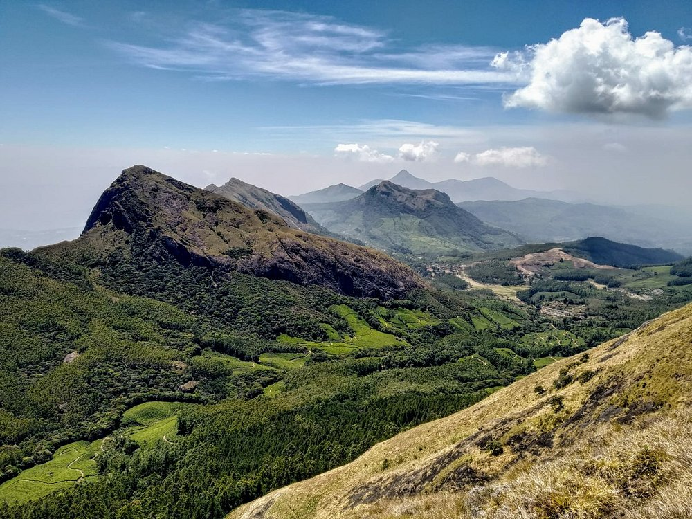
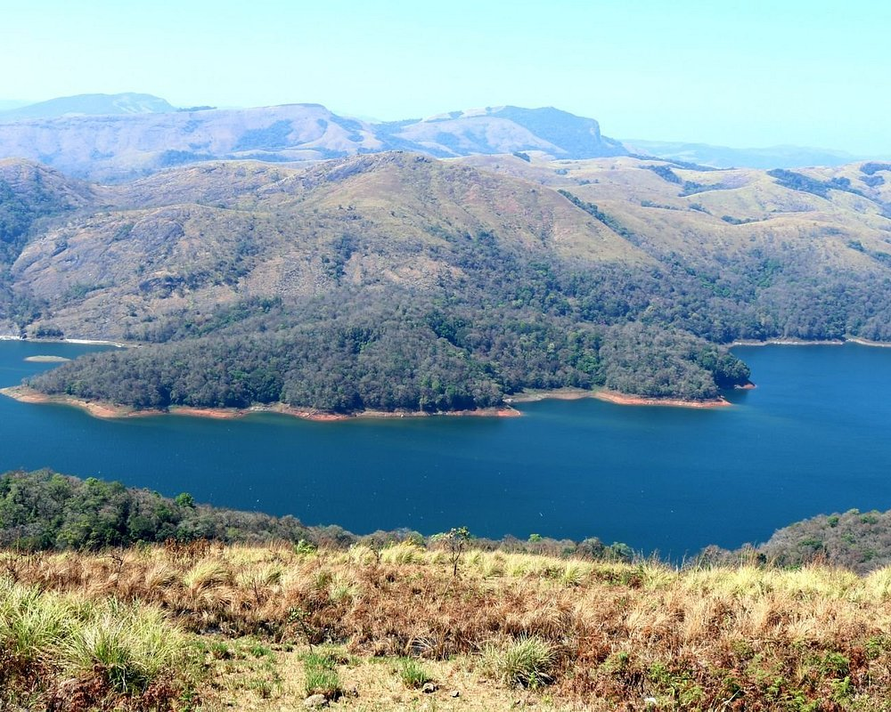

The route to go to Idukki Dam is to first reach Cheruthoni Dam. from the Cheruthoni Dam, you will get a EV every 10-15 mins. this EV then takes u to Idukki Dam. You can go there by walk also but that's little long (around 2 kms)

Meesapulimala is the second highest peak in western ghats. 2640m height. For Meesapulimala trek you need to get permission from Kerala forest department. There are 3 combo programs which offers including stay, food and guide for trekking.

This is an awesome place with stunning view to Idukki reservoir. Climate is superb and nice breeze..... A must visit place in Idukki....